充满童趣的首饰，埋藏内心的柔软 | John Sullivan 「艺术访谈」
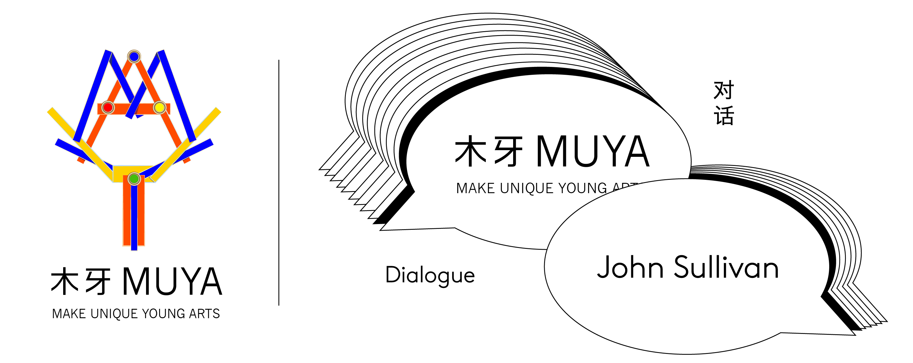欢迎来到木牙Make Unique Young Arts，和我们一起来探索我们的触觉特性，发现我们所隐藏的秘密～
游戏的诞生是因为对于所有灵长类动物而言学习生存是我们接触社会的第一步，而我们通过游戏来完成这一步。游戏存在在我们的每一个阶段（幼年期，发育期，成熟期）中。它是一种远超于物质需求更接近于精神世界满足的社会行为。在这样精神高度紧张的时代，高压的我们通过这样的方式来得到一定的降压减排。
我们将自己投入在虚拟世界中通过这样的方式来暂时的脱离现实。在这样虚拟空间中我们开始尽情的释放自己不同于日常的内心想法和深藏的欲望。
今天我们邀请了John Sullivan来到木牙MUYA带我们进入这样的虚拟空间，来深度挖掘那些隐藏在我们内心的好奇心和欲望然后重新接触平静的心灵以及好奇所带来的快乐。
Games were born because for all primates learning to survive is the first step we take in social interaction, and we do it through games. Games exist in every stage of our life (childhood, development, maturity). It is a social behavior far beyond the material needs and closer to the satisfaction of the spiritual world. In such an era of high tension, high pressure we through this way to get a certain amount of pressure reduction.
We immerse ourselves in the virtual world in a way that temporarily disconnects us from reality. In this virtual space, we begin to freely release our inner thoughts and deep desires that are different from our daily life.
We invite John Sullivan to MUYA to take us into such a virtual space, to explore the hidden curiosity and desire in our hearts. Then reconnect with the peace of mind and the joy of wonder.
John Sullivan是一位艺术家、金属匠、珠宝商和教育家，他的工作重点是心理学、神经心理学、人际关系和游戏理论。作为一个当代艺术家和金属匠，John探索的主题和问题周围的功能失调的关系，心理障碍，和治疗方法。
John最近毕业于纽约州立大学的金属艺术硕士学位。在研究生院之前，John是科罗拉多金属锻造协会的赞助协调员和董事会成员，也是艺术家Ira Sherman的学徒。他的作品在许多国家和国际场所展出，并在许多国内外出版物上发表。
John Sullivan is an artist, metalsmith, jeweler, and educator, whose work focuses on psychology, neuropsychology, interpersonal relationships, and theories of play. Working as a contemporary artist and metalsmith, John explores the themes and issues surrounding dysfunctional relationships, psychological disorders, and treatment methods.
John recently graduated with his Master of Fine Art in Metal from the State University of New York, New Paltz. Prior to graduate school, John was the Sponsor Coordinator and a board member of the Colorado Metalsmithing Association and an apprentice to artist Ira Sherman. John has exhibited work at a number of national and international venues in as well as having been published in numerous domestic and foreign publications.
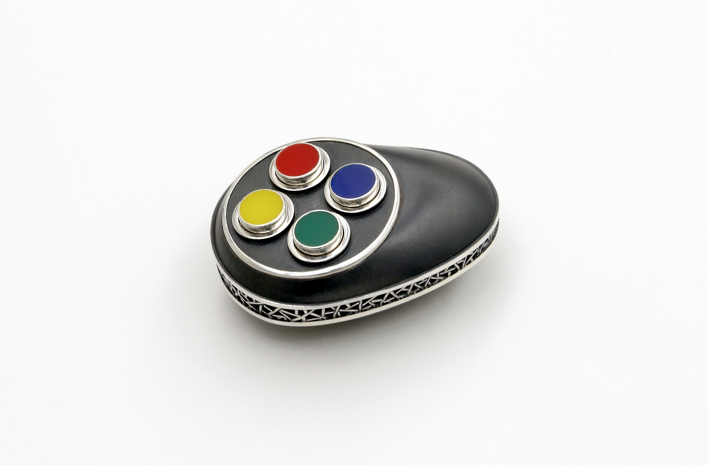
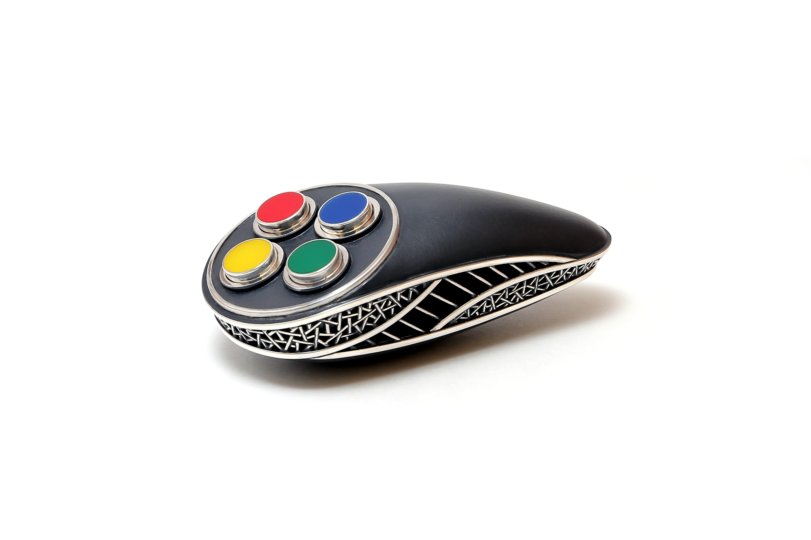

对我来说，游戏的动态过程一直是吸引人的，是一种让我不断发现自己也参与其中的表达和创造方式。
我开发的工作室实践适应并利用游戏理论作为一种通过自我实现来应对抑郁症和过去的创伤的方法。这种沉浸式的深度游戏让我的工作能够脱离现实，摆脱日常生活的负担。在这里，我可以通过创作和实验的行为，在一个安全的空间里表达我内心的想法和欲望。
我的创作欲望来自于对隐藏在生活经历、材料使用、再生和愈合过程中的可能性天生的好奇心。从这些灵感中，我制作了有思想的物品和当代首饰，捕捉并传达怀旧、年轻的奇迹和逃避现实的感觉。新奇、复杂和神秘的刺激属性创造了刺激的物体，邀请我的观众去探索他们的触觉特性，发现他们隐藏的秘密。正是通过这些物品，我重新发现了内心的平静和好奇的快乐。
The dynamic process of play has always been a fascinating and appealing behavior to me, and one that I have continually found myself engaging in as means of expression and creation.
The studio practice I have developed adapts and utilizes theories of play as a means of coping with dysthymic depression and past traumas through self-realization. The immersive escapism of deep-play allows my studio space exist in a realm outside of reality and free of the burdens of everyday life. Here I am able to express my inner thoughts and desires in a safe space through the act of creation and experimentation.
My desire to create emerges from an innate curiosity in the possibilities hidden in lived experiences, material use, and in regenerative and healing processes. From these inspirations, I make mindful objects and contemporary jewelry that capture and convey sensations of nostalgia, youthful wonder, and escapism. The stimulating attributes of novelty, complexity, and mystery create provocative objects that invites my audience to explore their tactile qualities and discover their hidden secrets. It is through these objects that I have rediscovered inner peace and an inquisitive joy.
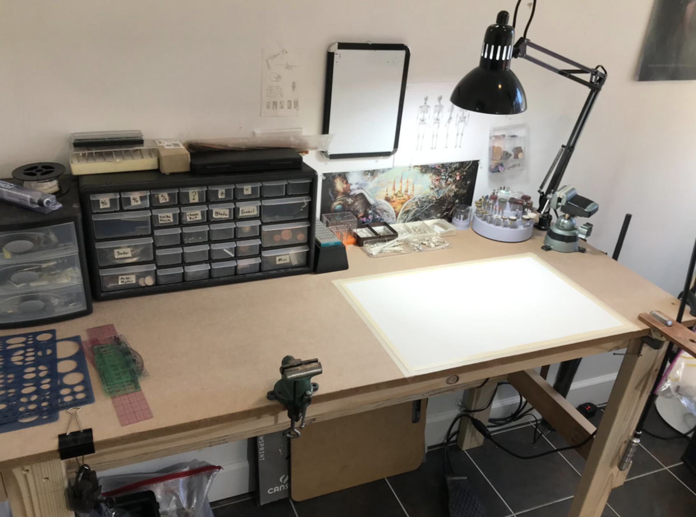
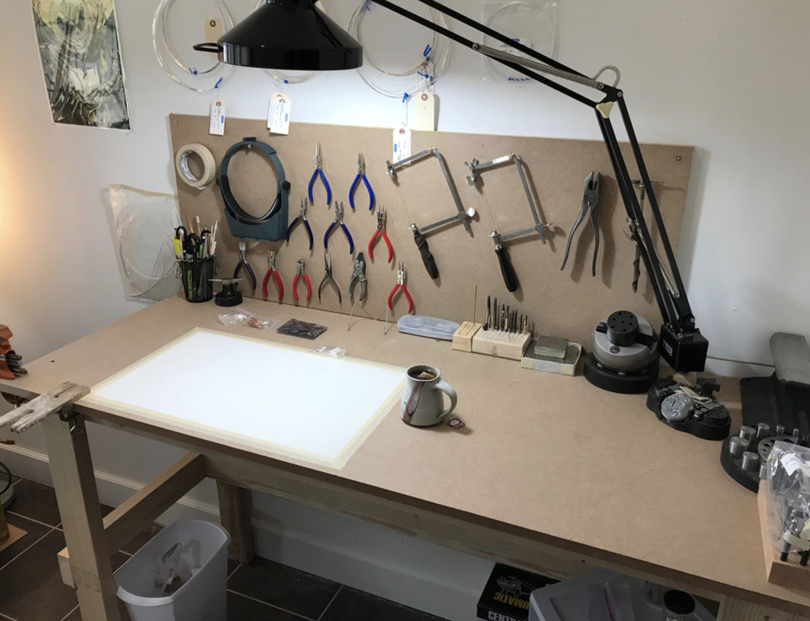

➤ 木牙MUYA: John 的作品和生活结合的特别紧密，用作品来回应生活。说明John的作品都是由自我为出发点。那John希望观众从作品中解读出的是John自己还是其他的思想？
John's works are particularly closely integrated with life, and you use your works to respond to life. It shows that John's works are based on the self. John hopes that the audience can interpret from the work John yourself or other thoughts?
John: 我的游戏作品的灵感来自于童年的怀旧之情，以及我至今仍能从中找到乐趣的玩具和玩具。通过成熟和经验获得了一种新的欣赏，我重新审视了我过去的这些情感物品，解构了捕捉我所连接的审美情感的视觉元素。在我与抑郁作斗争的时候，这些情绪触发因素是给我带来安慰和希望的强大源泉。虽然有时我渴望无忧无虑的童年，但我相信，我们年轻时的自己的青春精神仍然存在于我们所有人的内心，可以成为我们生活中快乐和奇迹的源泉。
My work on play is inspired by childhood nostalgia and the toys and objects of play that I still find enjoyment in today. With a newly found appreciation acquired through maturity and experience, I reexamine these sentimental objects from my past and deconstruct the visual elements that capture the aesthetic emotions I connect with. These emotional triggers are a powerful source of comfort and hope to me as I struggle with depression. Though at times I long for the carefree nature of my childhood, I believe that the youthful spirit of our younger selves is still within us all and can be a present source of joy and wonder in our lives.
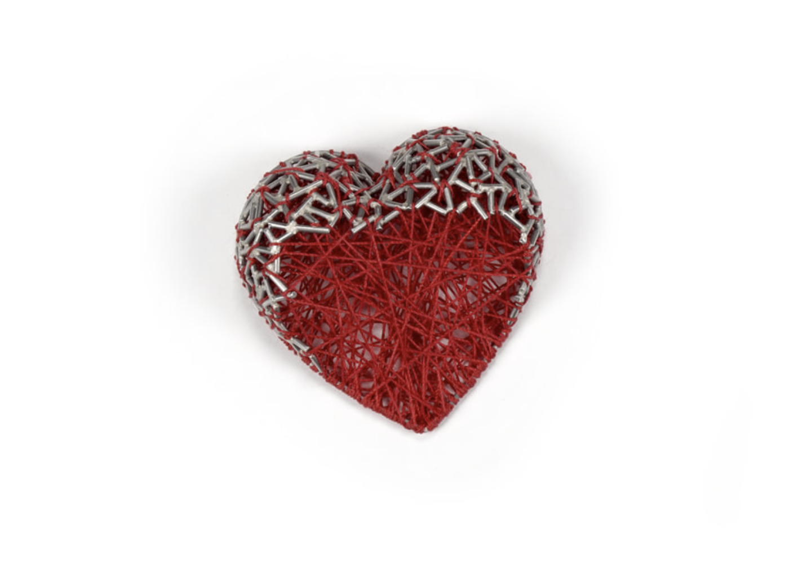
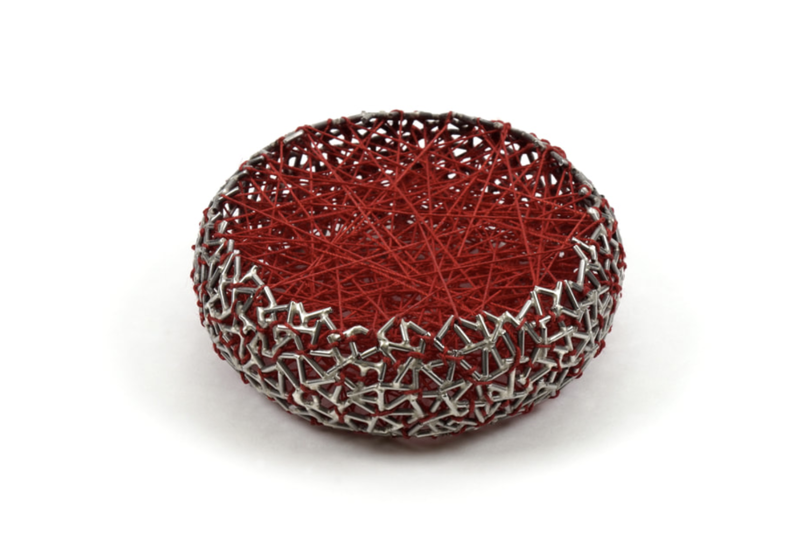
➤ 木牙MUYA: (承接上一问题)观众理解作品本身这一点对John来说重要吗？
(Continue the last question) Is it important for the audience to understand the work itself?
John: 虽然我的作品的设计是基于我个人的童年记忆和我与我的青年时代联系的对象，但我认为我的观众不需要了解我的背景、过程或灵感来理解或欣赏我的作品。我有意识地选择了视觉上的关键，如大胆的原色和简单的几何形式，暗指许多常见的设计主题，在操场设备和早期儿童玩具。
我想给我的观众足够的视觉刺激和信息，让他们自己以最小的方向来解读作品。我喜欢听我的观众在没有事先了解我的意图和背景的情况下观看我的作品时产生的各种解释。我的观众天真的眼神和他们的第一印象非常重要，因为这是判断我所做的作品是否传达正确含义的关键途径。我也相信在我的工作中留下解释和探究的空间，这是保持我的观众参与和好奇的关键部分。我不希望我的工作是一个问题或思路的结论或答案，而是一种方法，通过它，思想不断地被创造和维持。简单地说，如果你在一开始就知道答案，那么谜题的乐趣何在?
Though the design of my work is constructed from my personal memories of childhood and the objects that I associate with my youth, I do not believe it is necessary for my audience to know of my background, process, or inspirations to understand or appreciate my work. I consciously chose visual keys such as bold primary colors and simple geometric forms to allude to many common design themes found in playground equipment and early childhood toys.
I want to give my audience enough visual stimulation and information for them to interpret the work on their own with minimal direction. I love to hear about the many interpretations that my audience comes to when viewing my work with no prior knowledge to my intention and background. This innocent eye of my audience and their first impressions are very important to take note of, as it is a crucial way to see if the work I am making is conveying the right meaning. I also believe in leaving room for interpretation and inquiry in my work as a key part of keeping my audience engaged and curious. I do not wish for my work to be the conclusion or answer to a line of inquiry or thought, but rather, a means through which thought is continually created and sustained. To put it simply, where is the fun in a puzzle if you are given the solution in the beginning?
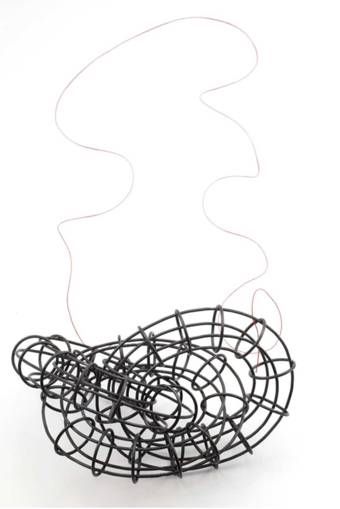
➤ 木牙MUYA: 在Controller 作品，控制“Control” 和游戏“Game”，是一对很有趣的名词，John怎么认为在游戏中，支配与被支配的关系？
In the project, Controller, “Control” and “Game” are both exciting nouns. Does game system is the controller? Or, does the player is?
John:《控制器》系列的灵感来自于我对玩具和游戏方法的调查。我发现电子游戏以及这一娱乐媒介所吸引的不断增长的用户群体便是一个典型的例子。我自己就是一个狂热的电子游戏玩家，从我小时候就一直如此。我是伴随着这种电子媒介的发展而长大的，我发现我现在仍然喜欢玩我6岁时玩的那些游戏。因此，我对这一媒介的欣赏与我所玩游戏的主机硬件有关。
通过我的《Controller》系列，我既向电子游戏控制器致敬，又提升了它的概念。虽然我所做的控制器不能像传统控制器那样工作，但它们的功能存在于我们和我们与它的联系中。
The inspiration for the Controller series came from my investigation into toys and methods of play that transcend age demographics. One such example I found were videogames and the ever-growing demographics this medium of entertainment appeals to. I, myself, am an avid videogame player and have been ever since my early childhood. I grew up alongside the advancement of this electronic medium and have found that I still enjoy playing the same games now, that I had when I was six. As such, my appreciation for this medium is associated with the console hardware that I played on.
It is through my Controller series that I both pay homage to and elevate the concept of the videogame controller. Though the controllers I’ve made do not function as a traditional controller, their function is present within us and our associations with it.
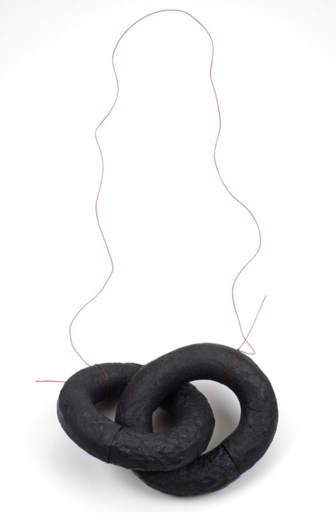
➤ 木牙MUYA:(承接上一问题）在John看来，如何看待控制与被控制相互之间的关系？
(Continue the last question) How John think about this relationship between control and being controlled?
John: 拥有一个没有功能的控制器的一个独特特性，就是对该功能的渴望。在我们生活的这个技术先进的世界里，我们已经习惯于在按下设备上的按钮时期待某种结果发生。尽管按动控制器上的按钮并没有什么机械效果，但我们却从这种行为中感受到一种非常真实的心理反应。就好像按下这些按钮会触发我们内心的某些东西。
虽然我没有被传统意义上的控制，但当我按下按钮，体验按钮压缩和弹回的触感时，我体验到了一种情感上的满足感。这种感觉是由我在玩游戏时所体验到的沉浸式逃避和快乐所触发的。由于多年的肌肉记忆，我的手本能地握住我的拇指，并把它放在理想的位置，以便在瞬间按下每个按钮。这是一种令人欣慰的熟悉感，我能够在这种形式中找到一种超越其原始功能的新意义。
A unique quality about having a controller that does not function, is the desire for that function. In the technically advance world we live in, we have been conditioned to expect some kind of result to occur whenever we press a button on a device. Though there is no mechanical result from the pressing of the buttons on my controllers, there is a very real psychological response we feel from that action. It is as though pressing these buttons triggers something within ourselves.
Though I am not being controlled in the traditional sense, when I press down on the buttons and experience the tactile sensation of the buttons compressing and springing back, I experience an emotional sense of satisfaction. This sensation is triggered by my conditioned associations with the immersive escapism and joy I experience when playing games. Due to years of muscle memory, my hand instinctually holds and positions my thumb in the ideal location to press each button at a moments notice. It is the comforting familiarity that I am able to find a new significance in this form beyond its original function.
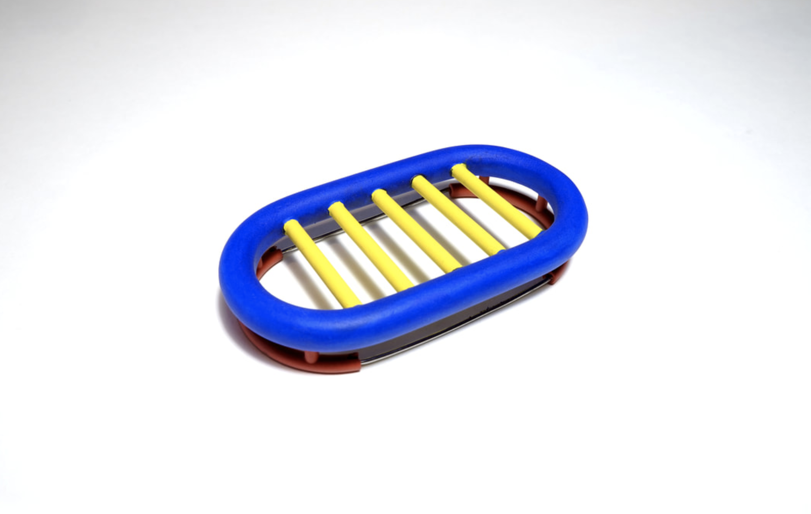
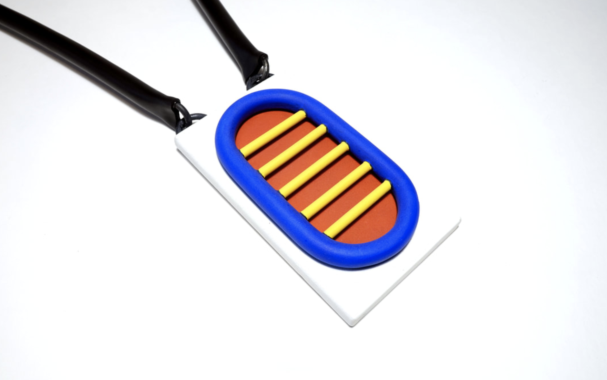
➤ 木牙MUYA:Controller 作品造型非常漂亮美观，偏弧线的边缘和造型设计，握在手中不如方形更容易掌控，这样的造型和控制器的概念形成的对比，觉得相当的有趣，John能和我们分享下，在这个作品的造型设计上的一些灵感概念吗？
The shape of the Controller is very beautiful and elegant. The edge and shape design of the curve is more challenging to control than the square in hand. I think the contrast between such a shape and the concept of the Controller is quite interesting. John, can you share some of the inspiration concepts in the shape design of this work?
John: 控制器系列的设计来自于我对收集视频游戏硬件的热爱，以及我对过去40年来主机和控制器设计的演变的迷恋。特别是电子游戏控制器，它是一种独特的对象，作为一种媒介，通过它我们能够以一种完全独特的游戏形式参与到数字化制造的领域中。多年来，控制器的人体工程学设计经历了许多不同的迭代。每一个新设计都试图在之前的基础上进行改进和创新，给予玩家广泛的功能和控制，同时保持不受干扰和舒适的形式。这种独特的设计方法激发了我制作自己的控制器，遵循这些形式和功能的规则。
在这个工作的设计阶段，我用粘土制作了一系列符合人体工程学的手持手柄，然后从这些手柄中选择一个既可以舒适地握着，又可以让拇指自由地与一系列按钮互动的手柄。这项工作的下一步是将新颖性、复杂性和神秘性结合到它们的最终形式中。为了进一步提升和扩展控制器的当代意义，由于其固有的美和物质价值，我用纯银构建了这个作品。然后，我在设计中加入了少量的装饰，以复杂的金属丝细节的形式。在完成这项工作时，我将银色的哑光黑色和高度抛光的金属丝细节创造出强烈的对比元素，这些元素共同构成了一个视觉刺激的对象，给它一种神秘的氛围。
The design of the controller series came from my love of collecting videogame hardware and my fascination with the evolution in design of the consoles and controllers over the past 40 years. The videogame controller in particular, is a unique object that functions as medium through which we are able to engage with a digitally fabricated realm in a wholly unique form of play. The ergonomic design of the controller has gone through many different iterations over the years. Each new design tries to improve and innovate on what came before it, to give the player a wide range of function and control while maintaining an unintrusive and comfortable form. This unique approach to design inspired me to fabricate my own controllers that follow these rules of form and function.
I began the design stage of this work by constructing a series of ergonomic handheld pods out of clay, and then choosing from among those ones that are both comfortable to hold and allow for the thumb to freely interact with a series of buttons. The next step for this work was to incorporate the attributes of novelty, complexity, and mystery to their final forms. To further elevate and expand upon the contemporary significance of the controller, I constructed this work out of sterling silver due to its inherent beauty and material value. I then incorporated a modest amount of embellishments to the design in the form of intricate wire details. Finishing off this work, I patinaed the silver matte black and high polished the wire details to create strong contrasting elements that all together make for a visually stimulating object with an air of mystery to it.
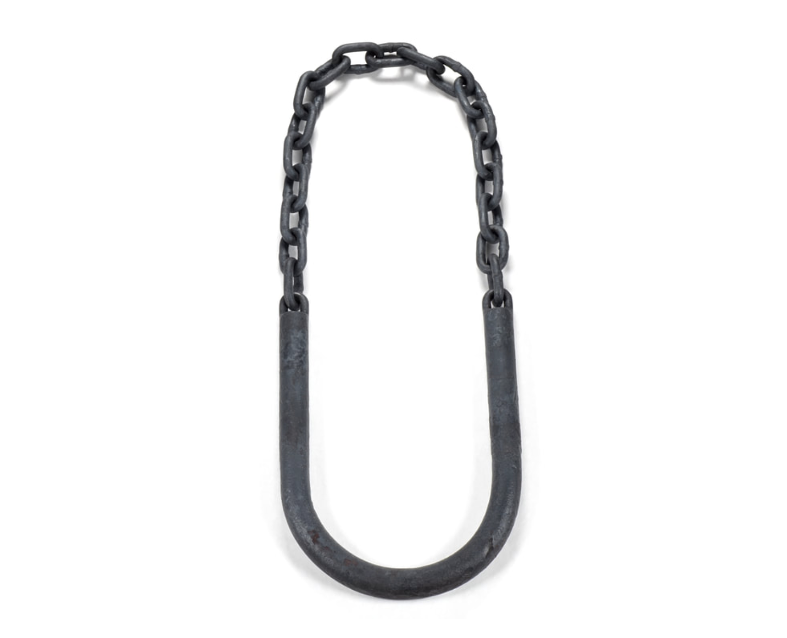
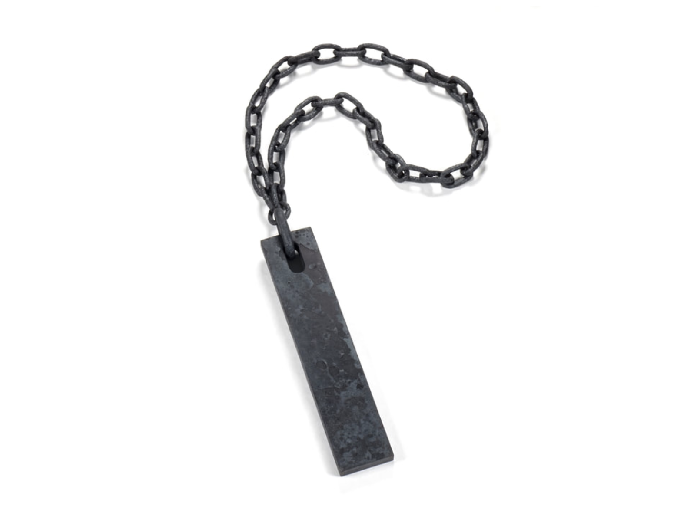
➤ 木牙MUYA: 在Playground的作品中，你介绍到，“在孩子看来操场是个安全玩耍和别的孩子社交的场所”，所以将操场作为主要设计元素出现在了作品中，John如何看待设计的符号感这个观点的呢？
In the project, Playground, there is one sentence “As children we would see the playground as a safe place to play and interact with other kids” . The playground as a primary design element in this work series. How John considered the signal or symbol of design in the work?
John: 在我的可穿戴作品《Playground》系列中，我受到游戏理论的启发，该理论强调了为儿童提供一个自由和非限制性的空间的重要性。操场就是这样一个地方，在那里有一个专门指定的空间，并围绕这一目的建造。我小时候在这些空间里玩耍和探索的经历影响了我今天在工作室里工作的方式。虽然我不再像小时候那样奔跑和尖叫，但在我现在的工作室实践中，探索、实验和创作的情感仍然存在。就像游乐场一样，我的工作室是一个不受现实限制的指定空间，在那里我可以自由地表达自己。正是基于这种情感，我开始创作一系列基于操场和自由表达的感觉的作品。
在解构操场设备的常见设计元素后，我挑出了我通常会联想到的操场设置的关键特征。考虑到这些元素，我开始设计一系列作品，捕捉游乐场的美学，并将其重新诠释为可穿戴的形式。为了进一步推动这种联系，我用与操场设备相同的材料建造了这个作品，主要是钢和橡胶，并用常用的明亮的原色绘制了这个作品。
In my series of wearable work, Playground, I was inspired by the aspect of play theory that emphasize the importance of having a free and nonrestrictive space for children to play in. The playground is one such location where a space has been specifically designated and constructed around facilitating this purpose. The experience I have as a child playing and exploring these spaces have influenced my approach to working in a studio space today. Though I do not run and scream as I had when I was a child, the sentiment of exploration, experimentation, and creation are still present in my current studio practice. Just like a playground, my studio is a designated space outside of the constraints of reality where I feel free to express myself. It is from this sentiment that I began to create a series of work based off the playground and the feeling of free expression.
Deconstructing the common design elements of playground equipment, I picked out key features that I would commonly associate with a playground setting. With these elements in mind, I began designing a series of work that captured the aesthetic of a playground and reinterpreting it into a wearable form. To push this connection further, I constructed this work out of the same materials used for the playground equipment, mainly steel and rubber, and painted the work with the commonly used bright primary colors.
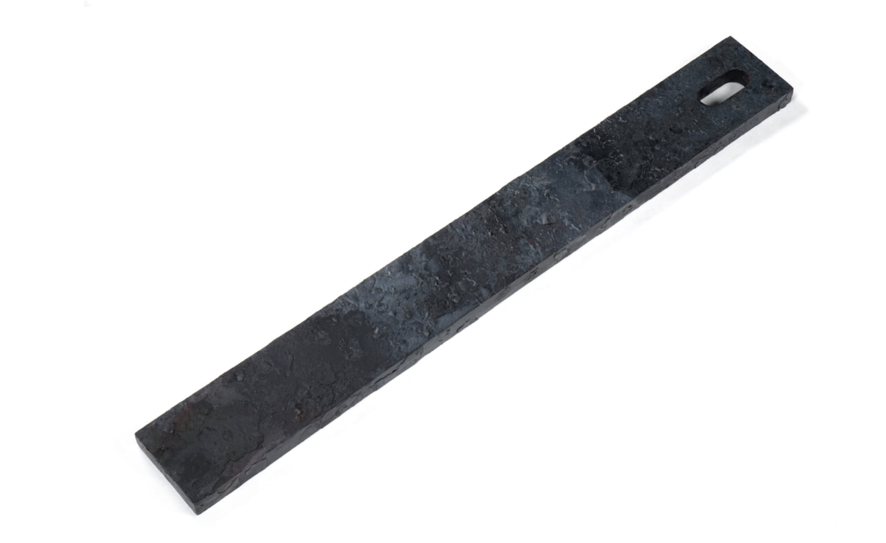
➤ 木牙MUYA: Play系列的作品，与童年和儿童的概念都有着背景关系，John在童年时代有什么有趣印象深刻的经历或者实践，影响到后来的作品和兴趣方向的吗？
The group projects of the topic PLAY are related to the background of childhood and the concept of children. Did John have any exciting and impressive experiences or practices in your childhood, which influenced your later works and interest direction?
John: 你可以说，当我还是个孩子的时候，我就开始渴望成为一名艺术家。在成长的过程中，我花了很多时间独处，几乎没有娱乐手段，所以我会花几个小时用乐高创造整个世界和故事。这些早期乐高积木的明亮和大胆的颜色和计算的几何形状是我的作品和许多美学选择的另一个灵感来源。当我没有创造新的世界时，我便会通过当时所拥有的几款电子游戏去探索它们。这段时间我独自玩游戏，学习创造和逃避到新的世界，这是我艺术生涯的早期开端。
You could say my desire to become an artist started when I was a child. Growing up I spent a lot of time alone and with very little means of entertainment, so I would spend hours creating entire worlds and narratives out of LEGO. The bright and bold colors and the calculated geometry of these early LEGO bricks are another source of inspiration in my work and on many of my aesthetic choices I’ve made. When I wasn’t creating new worlds, I was exploring them through the few videogames I had at the time. This time I spent playing alone and learning to create and escape into new worlds was the early beginnings of my artistic career.
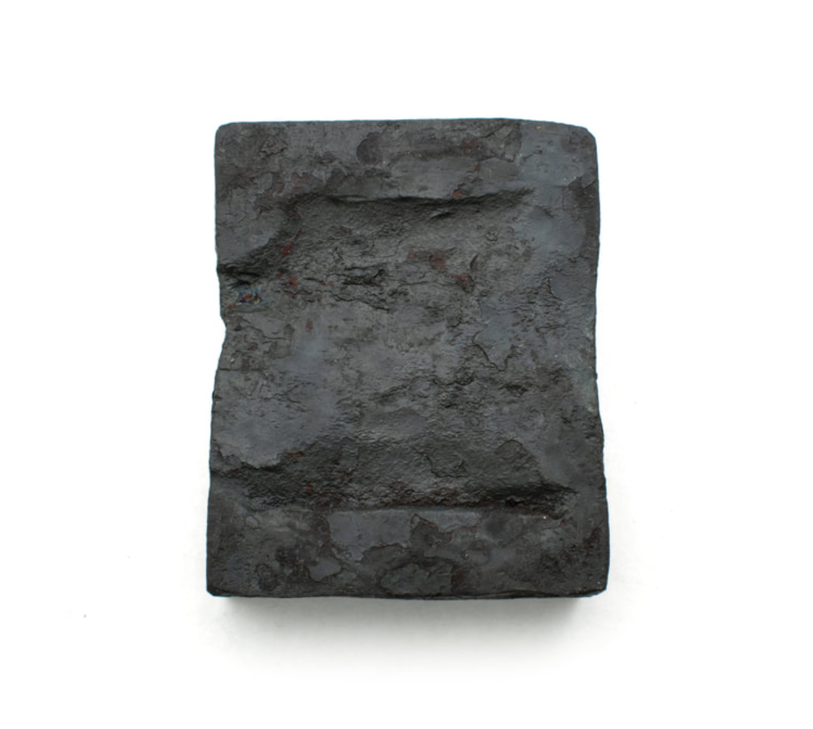
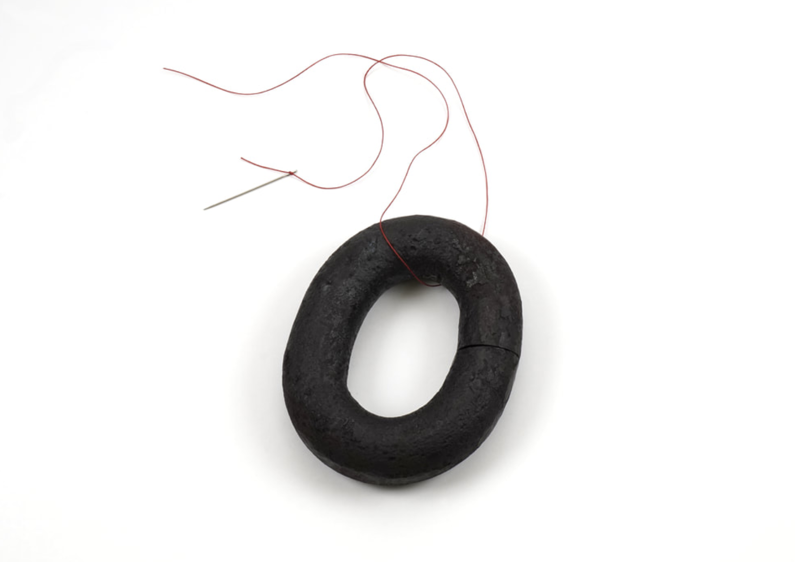
➤ 木牙MUYA: 现在艺术电商和各种自媒体平台非常多，您是如何推广您的作品的呢？有些艺术家疲于在各种平台上注册和宣传推广自己的作品，那您有哪些自己独有的宣传方式呢？
There are many art e-commerce and various self-media platforms. How do you promote your work? Some artists are tired of registering and promoting their works on various platforms, so what are your unique ways of promotion?
John: 对于视觉艺术家来说，我发现Instagram是一个非常可靠、非常适合自我推广的平台。还有许多其他免费的社交媒体平台，我认为艺术家有必要在所有这些平台上都有自己的一席之地，即使只是简单地使用与其他账户相同的用户名。你必须在这些平台间交叉推广自己的作品，这样你才能接触到尽可能多的用户。还有许多应用程序可以帮助实现这一点。同样重要的是，你有自己的网站，既可以作为你的作品的可访问的作品集，也可以作为在线销售你的作品的地点。
除了社交媒体平台，我还会将我的作品提交给任何符合我作品主题的报名和发表。网上展览是向来自世界各地的大量观众展示你的作品的好方法。这也是一个在你的领域内找到机会并开始让你出名的好方法。
For the visual artist I have found that Instagram is a very reliable and well-suited platform for self-promotion. There are many other free social media platforms out there and I believe it is necessary for an artist to have a presence on all of them, even if it’s simply to make a profile with the same username as all your other account. It is important that you can cross promote your own work between these platforms so that you can reach the widest audience possible. There are also many apps that can help facilitate this. It is also important that you have your own website to use as both an accessible portfolio of your work and as a location to sell your work online.
Aside from social media platforms, I submit my work to any call for entry and publication that fits the themes of my work. Online exhibitions are a great way to show your work to a large audience from around the world. It is also a great way to find opportunities within your field and to start getting you name out there.
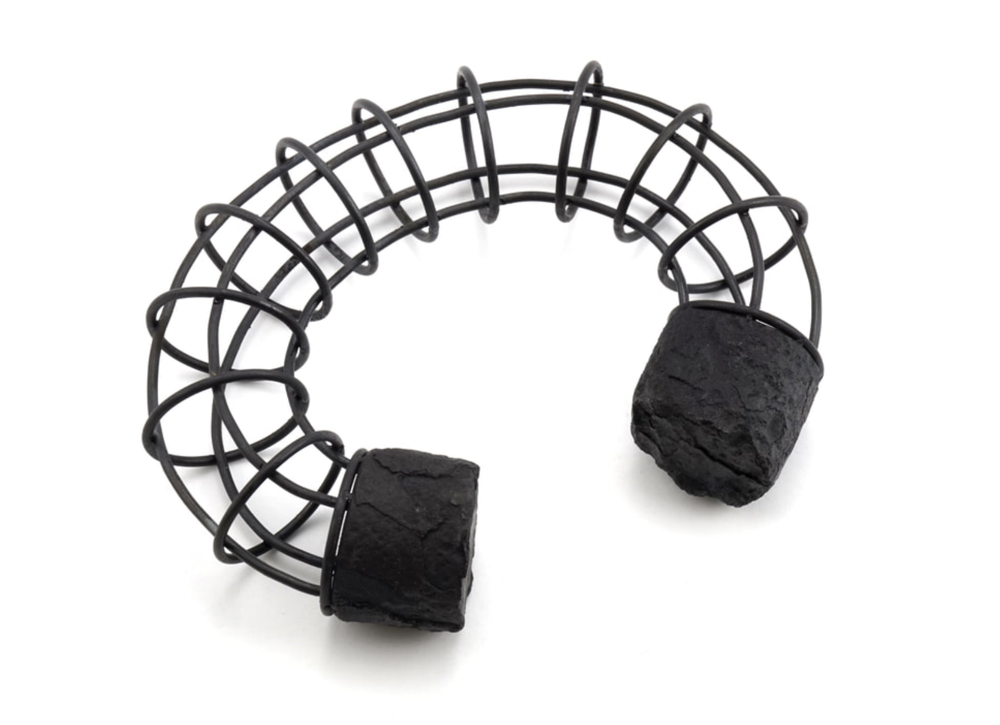
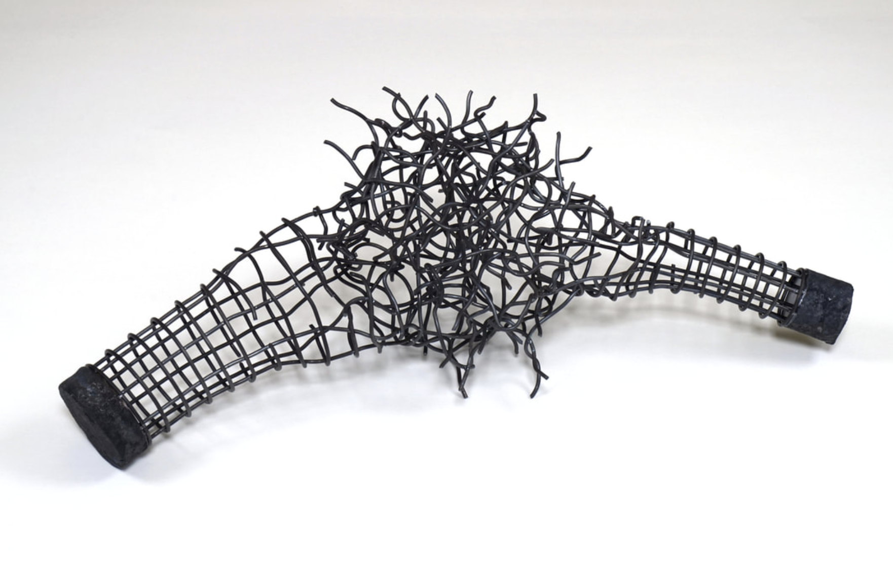
➤ 木牙MUYA: 为什么会选择金属作为自己的媒介？有什么机缘巧合吗？本科是什么专业的？为什么研究生要选择这个专业？
Why did you choose metal as your medium? Is there any coincidence? What is your undergraduate major? Why did John choose this major to graduate?
John: 我选择读研是出于两个愿望，一个是想在大学任教，另一个是想进一步推动和发展我的艺术事业。虽然我的本科学习很优秀，但我知道毕业后还有很多我想要学习和拓展的东西。
在读研之前，我花了四年的时间建立了一个独立的工作室实践，通过自己的实验和研究，磨练了自己的工艺和技能。虽然我毫无困难地做出了任何想到的东西，但我想做什么，为什么我要做的问题，一直困扰着我。所以，我把我的目光投向了研究生院，希望有时间、资源、支持和社区来促进我学习和成长为一名艺术家的愿望。现在我就要毕业了，我相信读研是我一生中最好的决定之一。我真正地成长为一名艺术家，并享受了它所带来的时间和挑战。
My decision to attend graduate school came from two desires, one was to be able to teach at a University level, and the second was to further push and develop my artistic career. Though my undergraduate studies were excellent, I knew that there was so much more I wanted to learn and expand on once I had graduated.
Prior to attending graduate school, I had spent four years building an independent studio practice and honing my craftmanship and skills through self-directed experimentation and research. Though I had no trouble making whatever came to mind, the question of what do I want to make, and why I am making, perplexed me. So, I set my sights on graduate school to have the time, resources, support, and community to facilitate my desire to learn and grow as an artist. Now that I am graduating, I believe going to grad school was one of the best decisions of my life. I have truly grown as an artist and have relished the time and challenges it presented.
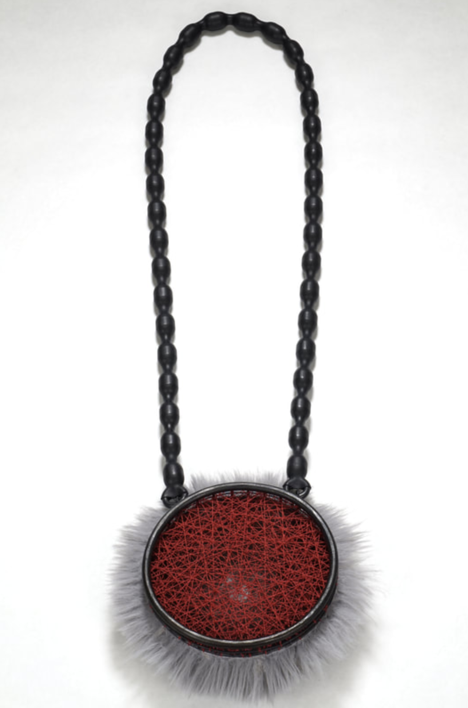
➤ 木牙MUYA: （承接上一问题）读完研究生John的未来计划是什么？会找哪些工作？
(Continue the last question) What is John's future plan after finishing graduate school? What kind of jobs will you look for?
John: 毕业后，我正在研究学术界的工作。在我本科学习期间，我有幸参加了两个学期的监督式大学教学。在那次经历之后，我在分享自己的知识和帮助他人走自己的艺术道路上获得了一种新的成就感。就在那时，我决定成为一名教育工作者，正是这个决定让我走上了今天的道路。
Having graduated, I am now perusing jobs in academia. It was during my undergraduate studies that I had the good fortune to take two semesters of supervised college teaching. After that experience, I had a newfound sense of fulfilment from sharing my knowledge and helping other on their own artistic paths. It was then that I decided that I would love to become an educator and that has led me to where I am today.
✯ Which inspire your works most ✯
“A smooth sea never made a skilled sailor.” Franklin D. Roosevelt
“一个平静的大海决不能造就出熟练的水手”
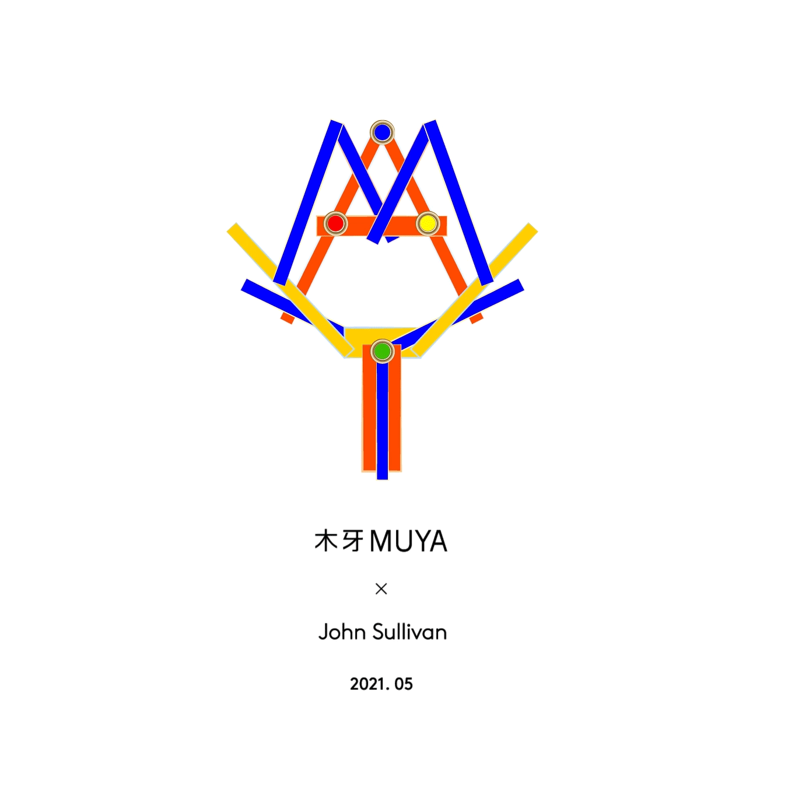
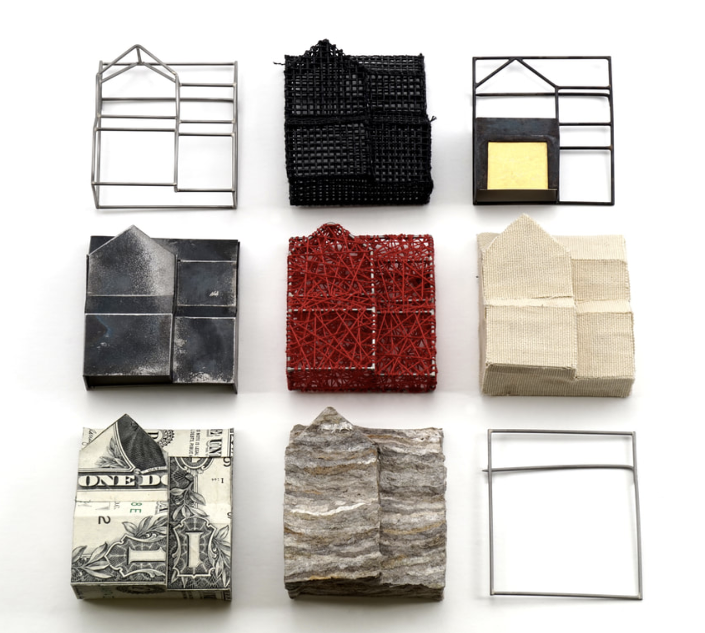
木牙微信订阅号